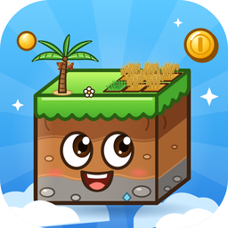

أرض الخير
ازرع، اصنع، وتاجر بين البيئات
قريباً على App Storeعن اللعبة
لعبة مزرعة تمشي فيها بشخصيتك بين حقولك، تحصد بيديك، وتبيع على بسطتك لزبائن يأتون من كل مكان. اختر أرضك من ثلاث بيئات، لكل واحدة خيراتها:
- الصحراء: النخيل والتمر، والنوق، والفخار والزجاج.
- الغابة: القمح والتوت والأرز، والأبقار والدجاج، والجبن والمربى.
- الجبل: الشعير والورد، والخراف والنحل، وماء الورد والعسل على المدرّجات.
والحكيم، البومة الذي يسكن شجرة مزرعتك، يعلّمك معلومة حقيقية عن كل ما تزرعه وتصنعه.
لكل بيئة خيرات لا توجد في غيرها، فتتاجر مع الجيران لتصنع ما لا تستطيع صنعه وحدك: تزور مزارع أصدقائك، وتتبادل معهم البضائع والهدايا.
اللعبة مجانية. الماس يُكسب من اللعب، ومن مشاهدة إعلان اختياري بمكافأة، ويمكن شراؤه أيضاً. لا إعلانات إجبارية أبداً.
الدعم والتواصل
لأي سؤال أو ملاحظة أو مشكلة: landofplenty.game@gmail.com
About
Land of Plenty is a social farm game where you walk your own character between your fields, harvest by hand, and sell at your stall. Choose a desert, forest or mountain land, each with its own crops, animals and crafts. Hakeem the owl teaches you a real fact about everything you grow and make.
Each land has goods found nowhere else, so you trade with neighbours to make what you cannot make alone: visit friends' farms and exchange goods and gifts.
Free to play. Diamonds are earned by playing, by watching an optional rewarded ad, or can be bought. Never any forced ads. Arabic first, English coming.
Support
Questions, feedback or problems: landofplenty.game@gmail.com